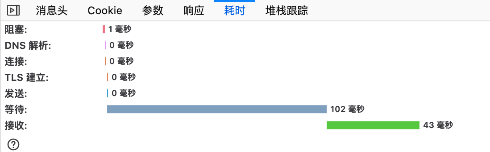

HTTP 缓存是指的通过 HTTP 协议的头部相关字段，约定如何缓存数据和更新缓存数据。
HTTP 缓存机制适用于任何机遇 HTTP 传输的数据，但是更多的应用是对静态数据的缓存控制。
一、HTTP 缓存机制
1.1 强缓存
HTTP 响应直接在浏览器中进行缓存，下次使用相同的 URL 请求数据会直接从浏览器缓存中获取数据，不会走网络通信，并且标识的状态码为 200。
下图是发请求但从浏览器强缓存中获取数据的示例：
因为没有网络请求，所以强缓存的时间消耗是 0ms：
1.2 协商缓存
数据在浏览器的强缓存中过期了，需要重新请求服务器。为了加快响应效率并避免数据对带宽的占用，浏览器请求数据时会带上协商字段，由服务器进行校验。
协商缓存机制：
- 浏览器会将资源识 ETag 上报给服务器，服务器对 ETag 进行校验（ETag 由数据资源计算得到，如果数据资源改变 ETag也会改变）。服务器响应资源时会带上 ETag，并被浏览器缓存。
- 浏览器会将资源的修改时间上报给服务器，服务器对浏览器缓存资源修改时间进行校验。如果该时间在文件最后变更时间之后，则表示数据没有变化过。服务器响应资源时会带上 资源修改时间，并被浏览器缓存。
当服务器通过协商字段校验到数据在服务器中没有变化，直接返回浏览器 304 ，浏览器会将之前过期的缓存重新激活。
下图是发请求（带上校验字段）并且在服务器校验数据没有改动后拿到的响应：
因为实际上还是会发起请求，所以仍然有网络请求消耗：
目前的协商字段包括：
- 1）
If-None-Match: <ETag> - 2）
If-Match-Since: <Last-Modified>
1.3 新鲜度
既然存在强缓存和协商缓存，那么浏览器如何判断当前是采用何种缓存呢？
浏览器认为新鲜的数据就可以直接使用浏览器中的缓存，否则都需要将数据发送给服务器，由服务器校验并返回浏览器是否仍然使用之前的缓存，或是使用新的数据进行缓存。
数据的新鲜时间由 HTTP 响应头控制：
Cache-Control: no-store, 把所有数据都作为不新鲜数据处理，且不会缓存数据（包括 ETag、Last-Modified）。Cache-Control: no-cache, 把所有数据都作为不新鲜数据处理，但是会缓存数据（包括 ETag、Last-Modified）。Cache-Control: max-age=N的头，相应的缓存的寿命就是 N（秒）。- 不含 max-age 信息时，使用响应头中的 Expires（过期时间戳）。
- 如果不含 max-age 和 Expires，则获取 Last-Modified 头，并用 (Date - LastModified) / 10 作为新鲜时间。
- 如果上述数据都没有，则不在浏览器强缓存。
1.4 缓存控制
HTTP 缓存机制中，通过 HTTP 响应头告诉浏览器该如何控制缓存：
Cache-Control: no-store, 不进行任何缓存（包括强缓存和协商缓存），ETag 和 Last-Modified 信息也不会进行缓存，发请求的时候也不会带上。Cache-Control: no-cache, 不在浏览器缓存数据，每次都只进行协商缓存。Cache-Control: max-age=<seconds>, 表示在浏览器中进行强缓存的时间，超过这个时间将会走协商缓存。Cache-Control: public, 表示可以在中间节点（例如 CDN）上缓存数据。Cache-Control: private, 表示只能在浏览器中缓存，中间节点不缓存数据。
下图显示了无缓存、public 缓存、private 缓存三种场景的请求情况：
1.5 浏览器缓存关闭
浏览器通常提供了缓存关闭，或者 ctrl + F5 强制刷新的功能，实现这样的功能其实也是基于 HTTP 缓存控制协议的：
- 浏览器忽略响应中的
Cache-Control: max-age=<seconds>和Expires，认为所有的的缓存都不新鲜，绕过强缓存。 - 浏览器忽略掉响应中的
ETag和Last-Mofified头部，禁止浏览器发送 ETag 和 INM，绕过协商缓存。 - 发送请求时带上头部
Cache-Control: no-cache和Pragma: no-cache告诉服务器自己没有开缓存。
如下图所示：
二、缓存控制头部描述
这里列出了 HTTP 缓存控制的相关头部的描述，详细阐述了各个头部的作用。
2.1 Cache-Control Request
max-age=<N>，客户端不会接受超过 N 秒缓存时间的响应。- no-cache，客户端不会直接使用存储的响应来满足请求，而是会请求服务器。
- no-store，不得存储响应中的任何部分，并且应在拿到响应后尽可能快的删除信息。
2.2 Cache-Control Response
- must-revalidate，一旦资源过期（比如已经超过max-age），在成功向原始服务器验证之前，缓存不能用该资源响应后续请求。
- no-cache，在发布缓存副本之前，强制要求缓存把请求提交给原始服务器进行验证(协商缓存验证)。
- no-store，告诉客户端不得存储响应中的任何部分，并且应在拿到响应后尽可能快的删除信息。
- public，任何缓存节点都可以存储资源，并进行共享。
- private，该响应仅由用户浏览器进行缓存，不得在其他缓存节点上存储并共享。private 可以指定字段，该字段数据将不会被缓存节点存储，其他数据仍然能够被缓存节点存储并共享。
- proxy-revalidate，和
must-revalidate效果一样，但在缓存节点上该字段优先级高于must-revalidate。在浏览器中该字段无效果。 - max-age，该指令指定资源的强缓存时间期限。
- s-maxage，该指令专用于指定缓存节点上的资源存储时间，在缓存节点上，该字段优先级高于
max-age。在浏览器中该字段无效果。
2.3 Expires
Expires 指明了资源的过期时间（格式化显示，如：Thu, 31 Dec 2037 23:55:55 GMT）。
如果在 Cache-Control 响应头设置了 “max-age” 或者 “s-max-age” 指令，那么 Expires 头会被忽略。
2.4 Pragma
Pragma 是 HTTP 1.0 的通用头部，Pragma: no-cache 的效果等同于 Cache-Control: no-cache。
2.5 协商字段
协商缓存是基于先决条件头部来实现的，缓存中涉及到的 INM 和 IMS 只是先决条件头部中的一部分。完整的先决条件头部可以参考 rfc7232。
- INM（If-None-Match），当服务器中的资源 ETag 和 INM 值相等时，返回状态码 304，且响应 Body 为空，否则正常返回数据。浏览器会把资源响应中 ETag 缓存起来，当下次请求该资源时会将 ETag 作为 INM 的值。
- IMS（If-Match-Since），当服务器中的资源 IMS 和资源的 Last-Modified 匹配时（匹配方式由服务器决定），返回状态码 304，且响应 Body 为空，否则正常返回数据。浏览器会把资源响应中的 Last-Modified 缓存起来，当下次请求该资源时会将 Last-Modified 作为 IMS 的值。
INM 和 IMS 同时出现时，INM 的优先级更高。
2.6 ETag
ETag 是 HTTP 响应头是资源的特定版本的标识符。对于 GET 请求可以使用 ETag 探测资源内容是否发生变化（对于 POST 请求，可以防止“空中碰撞”，更多细节可以参考ETag 避免“空中碰撞”）。
rfc7232 中并没有规定 ETag 的生成方式，通常 ETag 具有标识比较数据是否有变化的能力即可。
Nginx 生成 ETag 的方法非常简单，直接通过资源的 Last-Modified 和资源的字节大小来生成。可以看到 Nginx 中的 etag 生成源码:1
2
3
4
5
6// %xT 表示时间类型变量的十六进制表示
// %xO 表示偏移量类型变量的十六进制表示
etag->value.len = ngx_sprintf(etag->value.data, "\"%xT-%xO\"",
r->headers_out.last_modified_time,
r->headers_out.content_length_n)
- etag->value.data;
三、Nginx 对 HTTP 缓存的支持
etag, 是否开启自动生成和校验 ETag，仅对静态资源文件有效。
1
2
3Syntax: etag on | off;
Default: etag on;
Context: http, server, locationif_modified_since，描述了服务器如何对 IMS 请求进行校验。
1
2
3Syntax: if_modified_since off | exact | before;
Default: if_modified_since exact;
Context: http, server, location- off， 关闭对 IMS 的校验。
- exact，当资源的
Last-Modified == IMS时，返回 304，否则正常返回资源。 - before, 当资源的
Last-Modified < IMS时，返回 304，否则正常返回资源。
expies，用于告知浏览器对资源的缓存时间。当响应的状态码为 200, 201, 204, 206, 301, 302, 303, 304, 307, 308 ，会在响应头中添加
Expires和Cache-Control。1
2
3
4Syntax: expires [modified] time;
expires epoch | max | off;
Default: expires off;
Context: http, server, location, if in location- expires time，请求静态资源后多长时间资源过期。
- Expires 头部是格式化时间（如：Thu, 21 May 2020 16:06:17 GMT），是当前时间 + time 的时间点。需要注意，对于我们时区需要加 8 小时才是正确的时间。
Cache-Control: max-age=<time>仅返回多长的时间后会过期。
- expires modified time，过期时间为文件 Last-Modified + time。
- Expires 的过期时间戳为文件的
Last-Modified + time。 Cache-Control: max-age=<t>其中t = Last-Modified + time - current_time。如果 t 小于 0，返回no-cache。
- Expires 的过期时间戳为文件的
- expires apoch，仅返回
Cache-Control: no-cache，强制使用协商缓存。 - expires max
- Thu, 31 Dec 2037 23:55:55 GMT
- Cache-Control: max-age=315360000 即十年。
- expires off，关闭 Expires 和 Cache-Control。
- expires time，请求静态资源后多长时间资源过期。
四、测试 Demo
本文使用 Macbook 的 FireFox 68.0.1 浏览器进行测试。
4.1 Nginx 默认配置
Nginx 的一个简单静态服务器配置:1
2
3
4
5
6
7
8server {
server_name test.qq.com;
listen 80;
location / {
root html/test;
}
}
curl 发送相关请求进行测试1
2
3
4
5
6
7
8
9
10
11
12
13
14
15
16
17
18
19
20
21
22
23
24
25
26
27
28
29
30
31
32
33
34
35
36
37
38
39
40
41
42
43
44
45
46
47
48
49
50
51
52
53
54
55
56
57
58
59
60
61
62
63
64
65
66
67
68
69
70
71
72
73
74
75
76
77
78
79
80
81
82
83
84
85
86
87
88
89
90# 初始请求
$ curl "http://test.qq.com/index.html" -i
HTTP/1.1 200 OK
Server: openresty/1.11.2.2
Date: Wed, 20 May 2020 16:53:47 GMT
Content-Type: text/html
Content-Length: 12
Last-Modified: Wed, 20 May 2020 16:52:25 GMT
Connection: keep-alive
ETag: "5ec56049-c"
Accept-Ranges: bytes
hello world
# INM 匹配测试（返回 304）
$ curl "http://test.qq.com/index.html" -i -H 'If-None-Match: "5ec56049-c"'
HTTP/1.1 304 Not Modified
Server: openresty/1.11.2.2
Date: Wed, 20 May 2020 16:59:53 GMT
Last-Modified: Wed, 20 May 2020 16:52:25 GMT
Connection: keep-alive
ETag: "5ec56049-c"
# INM 不匹配测试（正常返回数据）
$ curl "http://test.qq.com/index.html" -i -H 'If-None-Match: "5ec56049-c-2"'
HTTP/1.1 200 OK
Server: openresty/1.11.2.2
Date: Wed, 20 May 2020 17:02:19 GMT
Content-Type: text/html
Content-Length: 12
Last-Modified: Wed, 20 May 2020 16:52:25 GMT
Connection: keep-alive
ETag: "5ec56049-c"
Accept-Ranges: bytes
hello world
# IM 匹配测试 (返回正确的数据)
$ curl "http://test.qq.com/index.html" -i -H 'If-Match: "5ec56049-c"'
HTTP/1.1 200 OK
Server: openresty/1.11.2.2
Date: Wed, 20 May 2020 17:00:21 GMT
Content-Type: text/html
Content-Length: 12
Last-Modified: Wed, 20 May 2020 16:52:25 GMT
Connection: keep-alive
ETag: "5ec56049-c"
Accept-Ranges: bytes
hello world
# IM 不匹配测试 (返回 412)
curl "http://test.qq.com/index.html" -i -H 'If-Match: "5ec56049-c-2"'
HTTP/1.1 412 Precondition Failed
Server: openresty/1.11.2.2
Date: Wed, 20 May 2020 17:00:39 GMT
Content-Type: text/html
Content-Length: 195
Connection: keep-alive
<html>
<head><title>412 Precondition Failed</title></head>
<body bgcolor="white">
<center><h1>412 Precondition Failed</h1></center>
<hr><center>openresty/1.11.2.2</center>
</body>
</html>
# IMS 匹配测试
$ curl "http://test.qq.com/index.html" -i -H 'If-Modified-Since: Wed, 20 May 2020 16:52:25 GMT'
HTTP/1.1 304 Not Modified
Server: openresty/1.11.2.2
Date: Wed, 20 May 2020 17:06:42 GMT
Last-Modified: Wed, 20 May 2020 16:52:25 GMT
Connection: keep-alive
ETag: "5ec56049-c"
# IMS before 测试（正常返回数据）
$ curl "http://test.qq.com/index.html" -i -H 'If-Modified-Since: Wed, 20 May 2020 16:60:25 GMT'
HTTP/1.1 200 OK
Server: openresty/1.11.2.2
Date: Wed, 20 May 2020 17:07:37 GMT
Content-Type: text/html
Content-Length: 12
Last-Modified: Wed, 20 May 2020 16:52:25 GMT
Connection: keep-alive
ETag: "5ec56049-c"
Accept-Ranges: bytes
hello world
总结：
- Nginx 默认配置就已经支持 Etag 的 INM 和 IM 请求
- 默认配置下，仅当 IMS 完全和 Last-Modified 时间相等时，才会返回 304。
- 浏览器由于没有接受到 Max-Age 和 Expires 头的新鲜度控制，因此根据 Last-Modified 推算静态文件本地过期时间。
- 浏览器直接请求页面，缓存没有过期（根据 Last-Modified 推算的过期时间），直接获取缓存中的数据，并显示状态码为 200。
- F5 刷新页面会强制浏览器发起请求，此时会带上 INM 和 IMS 头，Nginx 校验后返回 304（静态文件没有变更）。
4.2 api 接口使用 ETag 优化
通过 Openresty 计算响应值的 ETag（本例中采用 MD5 作为 ETag），和请求中的 INM 进行比较，匹配时返回 304，否则返回响应，并在响应头中添加 ETag。
1 | server { |
前端采用简单的 jQuery 发起请求:1
2
3
4
5
6
7
8
9
10
11
12
13
14
15
16
17
18
19
20
21
22
<html>
<head>
<link rel="icon" href="data:;base64,=">
<script src="https://cdn.staticfile.org/jquery/1.10.2/jquery.min.js"></script>
<script>
$(document).ready(function(){
$("button").click(function(){
$.get("/api", function(result){
alert("success")
});
});
});
</script>
</head>
<body>
<button>click</button>
</body>
</html>
首先发出第一次请求，服务器响应 ETag，由浏览器缓存 ETag。从下图中可以看出，请求大小为 20KB，且请求耗时为 147ms，接收数据耗时 43ms。

第二次再次发出去请求，浏览器自动将 ETag 放置请求头 INM，服务器校验 INM 后直接响应 304。从下图中可以看出，请求耗时为 95ms，接收数据耗时 0ms（并非绝对 0ms，chrome 中观察为 0.36ms）。
总结：
- 对于动态的 api 接口，也可以使用 ETag 进行优化，节约传输带宽。
- 如果将 ETag 的计算和校验放在接入层，则接入层需要等待接收完整的响应包才能作出 ETag 的计算和校验，损失性能。因此 ETag 的计算和校验最好放在应用层。